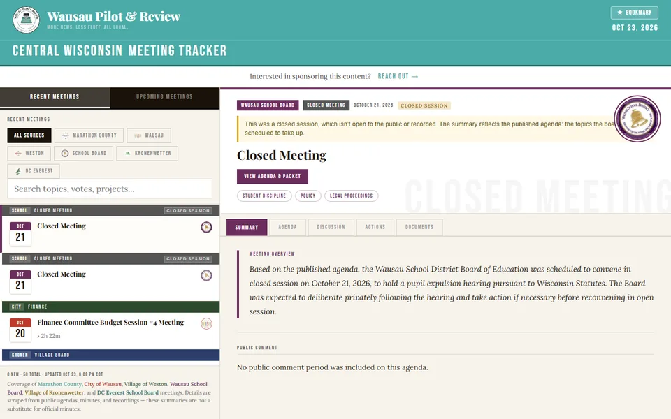

From our email
Gavel
Keeps watch on local government meetings so your reporters don't have to sit through all of them.
Grew out of the meeting tracker WPR uses to cover Marathon County government
- Pulls agendas, minutes and packets from the meeting portals cities and counties already use, such as CivicClerk and BoardBook.
- Transcribes meeting video posted to YouTube.
- Surfaces the items worth a story, so you can decide what to cover and what to skip.
We set it up for the boards you cover and run it for you. There's nothing to install.
$50-$150a month per municipality
